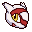
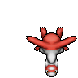
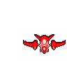
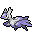
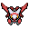
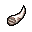

Pokédex / #380

Latias #380
DragonPsychic
It communicates using telepathy. Its body is covered in down that refracts light to make it invisible.
Generation 3 · Hoenn

Stats
| Attack | 80 | |
|---|---|---|
| Defense | 90 | |
| Sp. Atk | 110 | |
| Sp. Def | 130 |
In the wild
| Wild level | 100–100 |
|---|---|
| HP | 80 |
| Experience | 15 |
| Egg groups | Undiscovered |
Evolution
- It Mega Evolves into Mega Latias while holding the Latiasite.
Mega Evolution


Mega Latias
DragonPsychic
Mega Evolution of Latias holding the Latiasite
| Special ability | Levitate |
|---|---|
| Attack | 100 +20 |
| Defense | 120 +30 |
| Sp. Atk | 140 +30 |
| Sp. Def | 150 +20 |
Wear the Mega Ring and give the Pokémon its stone to hold; the form lasts 60 seconds. Mega forms have no Pokédex entry of their own.
Moves
| Level | Move | Type | Category | Power | Energy | Cooldown | Effect | |
|---|---|---|---|---|---|---|---|---|
| 1 | Tackle | Normal | Physical | 15 | 15 | 1s | Tackle is one of the most common and basic moves a Pokemon learns. It deals damage with no additional effects. | |
| 5 | Psywave | Psychic | Special | – | 100 | 15s | Psywave inflicts a random amount of HP damage, varying by user's level. | |
| 10 | Stored Power | Psychic | Special | 20 | 80 | 18s | Stored Power deals variable damage depending on the stat modifications of the user. When the user has no stat modifications, Stored Power's base power is 20. Its power increases by 20 for each stat boost the user has. | |
| 15 | Mist Ball | Psychic | Special | 60 | 60 | 9s | Mist Ball inflicts damage and has a 50% chance of lowering the target's Special Attack. | |
| 20 | Heal Pulse | Normal | Special | 120 | 150 | 90s | Heal Pulse recover party members HP. | |
| 25 | Dragon Breath | Dragon | Special | 60 | 70 | 19s | The user exhales a mighty gust that inflicts damage. This may also leave the target with paralysis. | |
| 30 | Zen Headbutt | Psychic | Physical | 80 | 80 | 15s | Zen Headbutt deals damage and has a 20% chance of causing the target to flinch. | |
| 35 | Psychic | Psychic | Special | 90 | 100 | 21s | Psychic deals damage and has a 10% chance of lowering the target's Special Defense by one stage. | |
| 40 | Dragon Pulse | Dragon | Special | 85 | 95 | – | Dragon Pulse deals damage and has no secondary effect. | |
| 45 | Psyshock | Psychic | Special | 80 | 85 | 12s | The user materializes an odd psychic wave to attack the target. This attack does physical damage. | |
| 50 | Steel Wing | Steel | Physical | 70 | 85 | 18s | Steel Wing inflicts damage and has a 10% chance of raising the user's Defense. | |
| 55 | Shadow Claw | Ghost | Physical | 70 | 70 | 16s | The user slashes with a sharp claw made from shadows. Critical hits land more easily. | |
| 60 | Fly | Flying | Physical | 90 | 110 | 20s | Fly deals damage and has no secondary effect. | |
| 65 | Giga Impact | Normal | Physical | 150 | 160 | 34s | Giga Impact deals damage but the user can't attack on the next turn. | |
| 70 | Substitute | Normal | Status | – | 200 | 120s | Creates a replacement who will take all the damage. During this the user can't use any move. |
Field abilities
CutFlySurfFlashDiveWaterfallBlinkTeleport
Special abilities
Levitate
Egg moves
None
Technical machines
None
Drops
| Item | Amount | Chance | |
|---|---|---|---|
| onigiri | 1–5 | 5% | |
 | latias doll | 1 | 0.1% |
| Draco Plate | 1 | 0.1% | |
| Mind Plate | 1 | 0.1% | |
 | held dragon fang | 1 | 0.1% |
| held twisted spoon | 1 | 0.1% | |
| TM 27 | 1 | 0.1% | |
| TM 43 | 1 | 0.1% | |
| latiasite | 1 | 0.0004% |